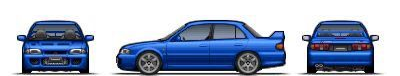
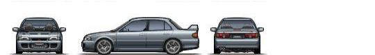
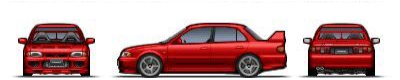
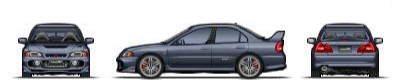
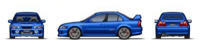
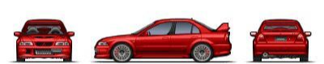
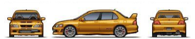
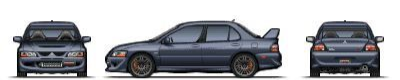
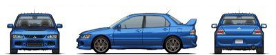
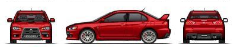

Üdvözöljük a Mitsubishi oldalán!
Ismerje meg a márkát itt!

Kiváló Teljesítmény
A Mitsubishi motorjai a teljesítmény és a hatékonyság tökéletes egyensúlyát kínálják. A legújabb fejlesztéseink között megtalálhatóak a tiszta és erős MIVEC (Mitsubishi Innovative Valve timing Electronic Control) motorok, amelyek optimalizálják az üzemanyag-fogyasztást és csökkentik a károsanyag-kibocsátást. Ezek a motorok intelligens szelepszabályozást alkalmaznak, hogy mindig a legjobb teljesítményt nyújtsák, függetlenül a vezetési körülményektől.
Fejlett Motorok
A Mitsubishi elkötelezett az iránt, hogy mindig a legmagasabb szintű technológiai megoldásokat nyújtsa. Az autóinkban alkalmazott legmodernebb motorok és hibrid rendszerek biztosítják a környezetbarát közlekedést és a kiváló üzemanyag-hatékonyságot. Akár a dinamikus városi vezetésről, akár a kalandos terepjárásról van szó, a Mitsubishi mindig kiemelkedő teljesítményt nyújt.
Turbómotorok
A teljesítmény szerelmesei számára a Mitsubishi turbófeltöltésű motorjai jelentik az igazi élményt. Ezek a motorok lenyűgöző gyorsulást és kiváló teljesítményt nyújtanak, miközben fenntartják az üzemanyag-hatékonyságot. A Mitsubishi Lancer Evolution legendás turbómotorja például a motorsport rajongók kedvence világszerte.

Design, amely Magával Ragad
A Mitsubishi autók dizájnja a letisztult vonalvezetést és az erőteljes megjelenést ötvözi. Az elegáns külső és az átgondolt belső tér minden utazást élménnyé varázsol. Az ergonomikus kialakítás, a prémium anyagok és a legmodernebb technológiák garantálják a maximális kényelmet és biztonságot.
Külső Design
A Mitsubishi autók külső megjelenése azonnal felismerhető, köszönhetően a márka jellegzetes Dynamic Shield dizájnjának. Ez a megjelenés erőt és dinamikát sugall, miközben megőrzi a modern és elegáns vonalakat. Az autók agresszív első lökhárítói, LED-es fényszórói és áramvonalas karosszériája nemcsak esztétikailag vonzó, hanem aerodinamikailag is hatékony.
Belső Tér
A belső tér kialakításánál a kényelem és a funkcionalitás volt a fő szempont. Az utastér prémium anyagokból készült, melyek nemcsak tartósak, hanem luxus érzetet is biztosítanak. Az ergonomikus ülések hosszú utakon is kényelmesek, és számos állítási lehetőséget kínálnak, hogy mindenki megtalálja a számára ideális pozíciót. A műszerfal és a középkonzol elrendezése intuitív, így minden fontos funkció könnyen elérhető.
Tágas és Sokoldalú
A Mitsubishi autók belső tere nemcsak elegáns, hanem rendkívül tágas és sokoldalú is. A variálható üléseknek és a nagy csomagtérnek köszönhetően az autók kiválóan alkalmasak mindennapi használatra, legyen szó bevásárlásról, hosszabb utazásokról vagy akár sporteszközök szállításáról. A hátsó ülések könnyedén lehajthatók, így még nagyobb rakodóteret biztosítanak, amikor arra van szükség.
Egyedi Színek és Opciók
A Mitsubishi számos egyedi színt és testreszabható opciót kínál, hogy mindenki megtalálja a saját stílusához legjobban illő autót. A különböző keréktárcsa-designok, a sportos kiegészítők és a luxus felszereltségi csomagok mind hozzájárulnak ahhoz, hogy az autó valóban egyedi legyen.
A Rally Világában
A Mitsubishi neve egyet jelent a rallysporttal, ahol a márka számos emlékezetes győzelmet aratott. A legendás Mitsubishi Lancer Evolution sorozat a rally világában ikonikussá vált, köszönhetően kimagasló teljesítményének, tartósságának és fejlett technológiájának. Az autók a World Rally Championship (WRC) számos szakaszán bizonyították rátermettségüket, ahol a Mitsubishi és legnagyobb riválisa, a Subaru, évtizedeken át folytattak ádáz küzdelmet a pályákon.
Rivalizálás a Subaruval
A Mitsubishi legnagyobb kihívója a rally világában kétségtelenül a Subaru volt. A két márka közötti rivalizálás a 90-es években és a 2000-es évek elején tetőzött, amikor a Subaru Impreza WRX STI és a Mitsubishi Lancer Evolution modelljei dominálták a rally pályákat. Mindkét autó saját rajongói tábort alakított ki, és gyakran vetélkedtek a legnagyobb címekért. A Subaru és a Mitsubishi közötti versengés nem csak a győzelmekről szólt, hanem a technológiai innovációk hajtóerejévé is vált, mivel mindkét gyártó folyamatosan újította és fejlesztette modelljeit, hogy a legjobbat nyújtsa a versenypályákon és az utakon egyaránt.
| Típus | Évjárat | Lóerő | Kép |
|---|---|---|---|
| EVO-1 | 1992 | 244 hp |  |
| EVO-2 | 1993 | 252 hp |  |
| EVO-3 | 1995 | 270 bhp |  |
| EVO-4 | 1996 | 276 hp |  |
| EVO-5 | 1997 | 276 hp |  |
| EVO-6 | 1999 | 330 hp |  |
| EVO-7 | 2001 | 276 hp |  |
| EVO-8 | 2003 | 276 hp |  |
| EVO-9 | 2006 | 287 hp |  |
| EVO-10 | 2007 | 300 hp és 360 hp |  |